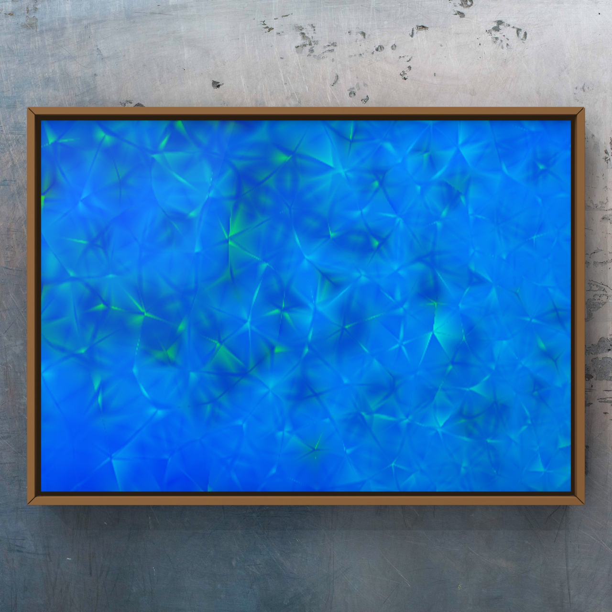
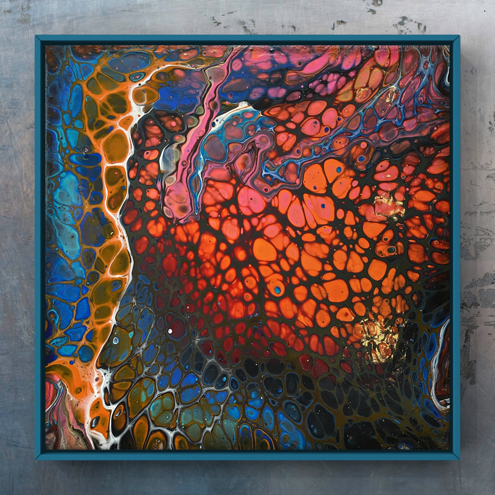
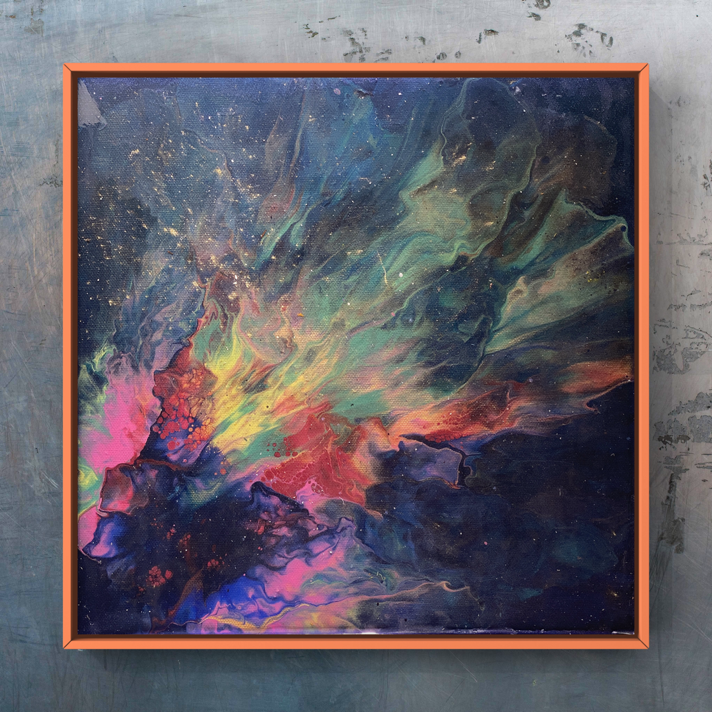

Daniel Mo Houshmand#

Work in progress
Most of the site is in English, though you will find a few sections in Norwegian, mainly for the courses I teach in fluid art at tegneskole.no.
I welcome every kind of feedback. If you spot an error or a typo, or see a way to improve a page, please tell me.
Background#
I am an artist at heart, with a diverse background in applied mathematics, physics, data science and entrepreneurship. My journey began in art and grew into an appreciation of the synergy between art and science, especially between fluid art and fluid mechanics.
I hold an MSc in Applied Mathematics, Mechanics and Numerical Physics from the University of Oslo (UiO), a BSc in Civil Engineering from Oslo and Akershus University College of Applied Sciences (HiOA, now OsloMet), and a BA in Design and Modelling Techniques from ESMOD Bordeaux/Oslo. I have also earned a number of professional certifications and specialisations in mathematics for machine learning, quantum machine learning and quantum computer hardware.
Achievements#
I had the privilege of proofreading for Professor Hans Petter Langtangen, most notably his book Finite Difference Computing with Partial Differential Equations: A Modern Software Approach.
In 2017 I joined as one of the first data scientists at the AI Lab funded by the Norwegian Labour and Welfare Administration (NAV). In 2022 I rejoined NAV, and deepened my skills in data handling, infrastructure design and full-stack development. My time at NAV was transformative: I developed tools such as Zipminator for secure data handling, and worked on a range of data-science projects. Zipminator has since grown into post-quantum encryption software, a QDaria product.
Entrepreneurial ventures#
Between 2017 and 2021 I worked on ventures in quantum technologies. First, in 2018, as CTO of iProud, backed by Xplorico and Malaysian officials, we aimed to build a personal coach on hybrid machine-learning algorithms. Then, from 2019, as CEO of QDaria, Norway’s first quantum-computer company, elected by the board, our vision was to build a quantum computer to tackle complex global problems. QDaria had four departments: quantum computer hardware engineering, a quantum AI lab, a synthetic biology lab and a Q-investment hub.
Our goal was to make an impact on health technology: bioinformatics, disease diagnosis, prediction and drug discovery, using machine learning, quantum machine learning and quantum computer hardware.
About this website#
Here I share notes, code and resources in an interactive Jupyter Book, to demystify quantum subjects. The topics range from the basics of quantum mechanics to the potential of anyons in quantum computation. I also discuss turbulent flows and the Navier–Stokes equations.
I invite you to explore and to send me feedback. Dive into the intersection of art and science; I hope you find both inspiration and knowledge.
Interdisciplinary pursuits#
I believe deeply that interdisciplinary collaboration unlocks the potential of emerging technologies. As an artist, applied mathematician, physicist and data scientist, I try to bridge art and science, and this website shows my artwork alongside my analytical projects. My work spans fluid art, fluid mechanics, turbulent flow, data science, computational science and quantum computing.
Fluid art and fluid mechanics#
My courses on the artistic side of fluid art, currently in Norwegian, are taught at tegneskole.no, and the course notes are on this site; an English version is on its way. The scientific side, the fluid mechanics of how acrylic paints flow and interact on a canvas, is written in English. The first is visual; the second is technical, a deep dive into applied mathematics and mechanics, but I encourage everyone to start with the basics and work up to the equations.
From turbulence to quantum#
My curiosity lies where science meets art, and where turbulent flow meets quantum mechanics. It led me from the macroscopic world of classical physics to the microscopic world of quantum mechanics. Here I share how my passion for high-performance materials and for computational fluid dynamics (CFD) simulations of turbulent flows brought me into the quantum domain.
The mathematical backbone is CFD and direct numerical simulation (DNS), both devoted to solving the Navier–Stokes equations. DNS resolves every scale of a turbulent flow; it is so demanding that only a few groups in the world have the means to run it at scale.
Quantum exploration#
Quantum computers, which may reshape our technological future, are one of my main interests. I walk you through my quantum journey, from the basics to quantum machine learning and topological quantum computers (TQC). I cover the mathematics underneath, from linear algebra to quantum circuits, and how it comes alive in quantum hardware.
I have gathered many notes, code examples and resources on quantum computing here, in an interactive Jupyter Book format, for a deep dive into quantum technologies.
A large part of this portfolio is about quantum machine learning and topological quantum computing, and the potential of anyons in quantum computation. I believe anyon-based systems will lead the next wave of quantum technology, and I aim to contribute to that work.
Engage and learn#
These subjects are hard to master, but I am here to guide you. With active engagement, visualisation and patience you can grasp them, and with steady effort the concepts become clearer over time.
I value your insights and feedback. If you have suggestions or corrections for any part of this website, please share them.
Warm regards,
—Mo

Dedication#
I am a passionate supporter of education and personal growth, and I consider myself very fortunate to have been guided by some remarkable minds. I dedicate this space to three of them. Above all, they set an example of kindness and respect for others, whatever their rank or status, and they guided me to the subjects that take up most of my time and most of this site. Two of them died far too early, in 2017 and 2019.
Hans Petter Langtangen (1962–2017)#
First, I honour my former professor and greatest inspiration, the award-winning professor, educator and visionary Hans Petter Langtangen, who died of pancreatic cancer in 2017. Between his diagnosis in early 2015 and his death in the autumn of 2017, he wrote and finished a series of books on scientific computing and engineering, published by Springer.
He fostered an environment that encouraged you to perform beyond your own idea of your abilities. He firmly believed that anyone, however hard their goal, could succeed with dedication and hard work. He was convinced that there were no “stupid” people, and he could persuade even the most self-doubting of us that we could achieve great things. He was part of the Center for Neuroplasticity, and his teaching gave me a lasting love of numerical methods for partial differential equations.
I am proud to have proofread some of his writing, and to have contributed to his last book, Finite Difference Computing with Partial Differential Equations: A Modern Software Approach. I think of him every day, with a mixture of grief and gratitude. Rest in peace, Maestro.
Peter Wittek (1980–2019)#
Second, I honour the memory of the adventurous and inspiring professor Peter Wittek of the University of Toronto. He introduced me to quantum machine learning in 2017, when I had only just begun to explore machine learning, natural language processing, topic modelling and latent Dirichlet allocation (LDA) in earnest. At the time I was an intern working as a data scientist in what was then the first officially funded AI lab in Norway. Although I was a novice, I found Professor Wittek’s teaching invaluable, helped by a background in physics that let me grasp these ideas with considerable effort.
His life was cut short in a Himalayan avalanche in 2019. I still believe that, had he been with us, our third attempt to found a quantum-computing start-up would have succeeded. His death is a profound loss to the scientific community and to everyone who knew him. I will remember him not only for his pioneering work in quantum machine learning, but for his generosity in guiding me through what was then a completely new field, and later for his faith in me and in our, perhaps in hindsight over-ambitious, attempt to found the first quantum-computer company in Norway. May he rest in peace.
Jon Magne Leinaas#
I am privileged to salute my former professor in non-relativistic quantum mechanics (Modern Quantum Mechanics), a giant of a mentor and, more importantly, a wonderful human being: Jon Magne Leinaas. With his friend Jan Myrheim, he predicted anyons almost 50 years ago, in 1977. Their prediction was confirmed independently, twice, in different laboratories during the pandemic (see, for instance, “Welcome anyons” in Nature). Jon is a member of the Royal Swedish Academy of Sciences, which awards the Nobel Prize in Physics, and many consider him and Jan strong candidates for it. Anyons sit between fermions and bosons, and they could transform quantum computing, with a large, positive impact on humanity.
After covering the many types of qubit, I turn my attention to topological quantum computers. I intend to devote much of my future work to this direction, and to explain every facet of the discovery of anyons. This new class of particles is a profound advance in our understanding of quantum mechanics. Anyons are the theoretical basis of topological quantum computers, a computing paradigm that uses the properties of these exotic quasi-particles for computation. They offer a promising route to fault-tolerant quantum computation, one of the most significant challenges in the field.
I am convinced that topological quantum computers, built on anyon-based qubits, will lead the next wave of advances in quantum computing, because fault tolerance and stability are built into them, and those are exactly what practical, large-scale quantum computers need. Through this work I aim to show the potential of anyon-based topological quantum computers and their potential to lead the future of quantum computing. It pays homage to the work of Leinaas, and I hope it contributes to our shared understanding of this promising technology. I believe that by explaining how these systems work, we can inspire and speed up further research and development, and come closer to the quantum future we all envision.
Finally, I thank TU Delft and edX for their comprehensive courses on quantum computing and quantum computer technology. They helped me grasp these fascinating and complex subjects, and the hardware part of this site draws heavily on them. I recommend them to anyone interested in the field.
I hope you enjoy exploring this website. Feel free to browse, learn and get in touch with any questions or comments as you explore the different sides of my life and work. Whether you are drawn to my paintings or to the technical work, I warmly invite you to come along on this journey; I am always glad to meet others who share a passion for learning, innovation and positive impact.

Contents#
About
Quantum Mechanics
Quantum Computation
Quantum Computer Hardware
- 3. The Hardware of Quantum Computers
- 4. Spin Qubits
- 5. Superconducting qubits
- 6. NV Center Qubits
- 7. Topological Qubits
- 7.1. Introduction to Topological Qubits
- 7.2. Majorana fermions and where to find them
- 7.3. Majorana bound states in superconductors
- 7.4. Majorana experiments
- 7.4.1. Practice Quiz 10
- 7.4.2. Quiz 10: Topological qubits
- 7.4.2.1. Question 1: Majorana fermion
- 7.4.2.2. Question 2: A proof
- 7.4.2.3. Question 3: A superposition
- 7.4.2.4. Question 4: A qubit
- 7.4.2.5. Question 5: Protected from the environment
- 7.4.2.6. Question 6: Spatially separating a pair
- 7.4.2.7. Question 7: Conventional superconducters
- 7.4.2.8. Question 8: P-wave superconductor
- 7.4.3. Question 9: Entering the metal
- 8. Quantum Annealing
- 9. Summary: the qubit platforms compared
Quantum Machine Learning
- 10. Quantum Machine Learning
- 11. Classical and quantum probability
- 11.1. What are the elements of a quantum circuit?
- 11.2. About QuTiP
- 11.3. Quantum Machine Learning is a rocket emerging
- 11.4. Classical probability distributions
- 11.5. The Geometry of Probability Distribution
- 11.6. Stochastic Matrix
- 11.7. Quantum states
- 11.8. Qubits revisited
- 11.9. Superposition revisited
- 11.10. Bloch Sphere revisited
- 11.11. Interference
- 11.12. More qubits and entanglement
- 11.13. Multiple Qubits revisited
- 11.14. Further reading
- 12. Measurements and mixed states
- 13. Evolution in closed and open systems
- 14. Classical and quantum many-body physics
- 15. Gate-model quantum computing
- 16. Adiabatic quantum computing
- 16.1. Adiabatic Theorem
- 16.2. Unitary evolution and the Hamiltonian
- 16.3. The adiabatic theorem and adiabatic quantum computing
- 16.4. Quantum Annealing
- 16.5. Chimera Graph
- 16.6. Quantum annealing
- 16.7. References
- 16.8. Implementations
- 16.9. Superconducting Architectures
- 16.10. Dissadvantages
- 16.11. Trapped ions
- 16.12. Photonic Systems
- 17. Variational circuits
- 18. Discrete optimisation and ensemble learning
- 19. Discrete optimisation and unsupervised learning
- 20. Kernel methods
- 21. Probabilistic graphical models
- 22. Quantum phase estimation
- 23. Quantum matrix inversion
- 23.1. Introduction
- 23.2. Setting up the problem
- 23.3. Quantum Matrix Inversion
- 23.4. Quantum phase estimation
- 23.5. Using Quantum Linear Algebra for Learning
- 23.6. Conditional rotation of ancilla
- 23.7. Uncomputing the eigenvalue register
- 23.8. Rejection sampling on the ancilla register and a swap test
- 23.9. Quantum-Assisted Gaussian Processes
- 23.10. References
- 24. Quantum kernels and support vector machines
- 25. Variational quantum kernels
Mathematics and Data
Software
Art
QDaria
- Introduction to QDaria
- QDaria Business Plan
- Executive Summary
- Mission and Vision
- Market Analysis
- Competitive Landscape
- Products and Services
- Strategic Roadmap and IPO Timeline
- Financial Plan and Projections
- Risk Factors and Mitigation
- Appendix
- QDaria Business Plan - Premium Chart Card Implementation
- QDaria Investor Dashboards
- QDaria Competitive Intelligence Visualizations
- QDaria Quantum Computing Whitepaper
- Table of Contents
- Executive Summary
- Introduction
- QDaria’s Quantum Technology Suite
- Topological Quantum Computing with Fibonacci Anyons
- Classical HPC + Quantum Fusion
- Quantum AI Integration
- Ethical and Societal Implications
- Design Philosophy & Development
- Roadmap and Future Milestones
- Conclusion
- List of Figures
- List of Tables
- References
- Appendices
- Strategic Plan for QDaria’s Quantum Computer Launch
- Chief Operating Officer (COO)
- BOARD RESOLUTION OF QDARIA
- QDARIA EXECUTIVE COMPENSATION POLICY
Alive
- Social Irresponsibility Analysis of WEF Partner Companies
- Comprehensive Framework for Visualizing Corporate Social Irresponsibility Using Alive Standards
- Social Irresponsibility Analysis of WEF Partner Companies
- Key Performance Indicators (KPIs)
- Comparative Analysis: Industry and Regional Trends
- Interactive Dashboard Development
- Predictive Modeling for Non-Compliance Risk
- Research Documentation and JupyterBook
- Recommendations for Corporate Accountability
- Executive Summary
- Core Metrics for Quantifying Social Irresponsibility
- Advanced Visualization Toolkit
- Innovative Presentation Techniques
- Python Implementation Guide
- Actionable Recommendations
- Next Steps
- Risk Dashboard
- Technical Documentation: Alive-Book Visualization System
QDaria Quantum Book
- QDaria Quantum Book
- Part I: Quantum Mechanics
- Part II: Quantum Computation
- Part III: Quantum Hardware
- Part IV: Quantum Machine Learning
- Part V: Post-Quantum Cryptography
- Part VI: Zipminator
- Part VII: Qm9
- Part VIII: QDiana
- Part IX: QMikeAI
- Part X: THQAI
- Part XI: Notebooks
- Appendix: Anonymization techniques
- Appendix: FIPS 203
- Appendix: Glossary
- Appendix: Quantum resources

Notebook execution#
The notebooks on this site are run in a pinned environment and published with their results. This table lists each notebook with the time and method of its last run.
Document |
Modified |
Method |
Run Time (s) |
Status |
|---|
Ibis redibis nunquam per bella peribis